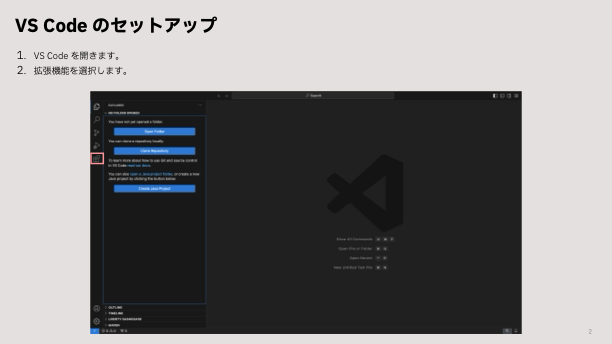
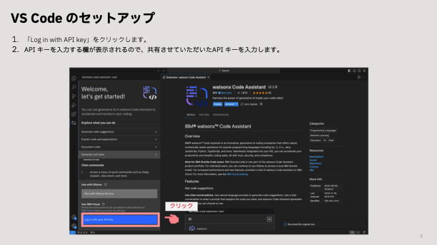

VSCodeでwCAのインストールをするためのガイド
ここでは、IDE VSCodeで必要なソフトウェアツールのインストール方法について説明します。
Watson Code Assistant (wCA)
Last updated: 2024/12/23
環境設定
1. Java のインストール
こちらのリンクを使って Java21 をインストールしてください:
上記はすべて圧縮ファイルなので、お使いのローカル環境の任意フォルダで解凍する必要があります。
-
以下のコマンドで Java がインストールされているかチェックできます:
-
Javaをインストールした後に環境設定を行います。
PATH変数にJavaを追加し、JAVA_HOME環境変数を設定します。 -
Mac:
- .zshrc or .bash_profile を開きます
- 以下の行を追記します。
- ファイルを保存して終了します（CTRL + X を押し、次に Y を押し、Enter を押します）。
- シェル構成をリロードすると変更が有効になります。
- 次のコマンドで JAVA_HOME を確認します:
-
Windows:
-
Windowsの検索バーから環境変数を開きます（検索バーで「環境変数の編集」を検索します）
- 環境変数から、JAVA_HOME変数を設定します。（JAVA_HOMEが設定されていない場合は新規をクリックし、既存のJAVA_HOMEを変更する場合は編集をクリックし、前のステップでインストールしたJavaを指定します）:
- 環境変数を使用して、PATHにJavaを追加します:
2. Maven のインストール
-
Windows
- Mavenの公式ウェブサイトを: Maven のダウンロードページ
- 「Files」の下にあるバイナリZIPアーカイブのリンクをクリックします。 (e.g., apache-maven-x.x.x-bin.zip).
- ZIPファイルを任意の場所に解凍します。 e.g., C:\Apache\maven.
- 環境変数を使用して MAVEN_HOME 変数の設定を行います。:
- 環境変数を使用して、PATHにMavenを追加します:
-
Mac
-
homebrewを使ってMavenをインストールします。
- 以下のコマンドを入力し、Mavenが正しくインストールされているか確認してください。:
3. VSCode のインストール
4. wCA API Key
APIキーはIBM社員が提供します。IBM社員にご連絡ください。
5. WCA 拡張モジュールのダウンロード
Marketplaceからwatsonx Code Assistant拡張機能をダウンロードします

「インストール」をクリックします。
6. WCAへログイン
ステップ5で拡張機能をインストールした後に、以下の手順で拡張機能にログインしてください。:
- wCA の拡張機能から API キーを利用して、ログインします。

7. Installing Liberty Tools and Java Extension
VSCode のマーケットプレイスから、以下のようにJava拡張機能用のLiberty Toolsと拡張パックをインストールします。
8. WCAを実際に試す
WCA のチャットウィンドウを開き、モデルとチャットすることで、API キーが正しく設定されているかどうかをWatsonX Code Assistantタブに移動して確認できます。